AMZI JEFFS
I am a math PhD with 10+ years software engineering experience, currently based in Pittsburgh, PA and seeking a job in data science, machine learning, or research. This page contains my academic work.Most recently, I was an NSF Postdoctoral Fellow at Carnegie Mellon University, working in combinatorics and discrete geometry, with Florian Frick as my sponsor. In 2021 I completed my PhD at the University of Washington under Isabella Novik.
My mathematical research focuses on the relationship between geometric and combinatorial objects. I am interested in geometric realizations of combinatorial objects, especially realizations that are minimal, usually with respect to dimension. In the other direction, I work to understand the combinatorial properties of geometric objects, such as their enumeration up to combinatorial equivalence or combinatorial decompositions induced by geometric operations.
PAPERS (in chronoligical order of first preprint, click for pdfs)
- Embedding dimension gaps in sparse codes
with Henry Siegel, David Staudinger, and Yiqing Wang. Preprint. 2023. - Quantitative upper bounds on the Gromov–Hausdorff distance between spheres
with Michael Harrison. Preprint. 2023. - Distances between realizations of order types
with Boris Bukh. Submitted. 2023. - Gromov–Hausdorff distances, Borsuk–Ulam theorems, and Vietoris–Rips complexes
with Henry Adams, Johnathan Bush, Nate Clause, Florian Frick, Mario Gómez, Michael Harrison, Evgeniya Lagoda, Sunhyuk Lim, Facundo Mémoli, Michael Moy, Nikola Sadovek, Matt Superdock, Daniel Vargas, Qingsong Wang, and Ling Zhou.
Submitted. 2023. - Realizing convex codes with axis-parallel boxes
with Miguel Benitez, Siran Chen, Tianhui Han, Kinapal Paguyo, and Kevin A. Zhou.
Involve (accepted), 2022. - Planar convex codes are decidable
with Boris Bukh.
SIAM Journal on Discrete Mathematics, 2022. - Recognizing and realizing inductively pierced codes
with Ryan Curry, Nora Youngs, and Ziyu Zhao.
Journal of Computational Geometry, 2022. - Colorful words and d-Tverberg complexes
with Florian Frick.
Combinatorial Theory (accepted), 2022. - Decompositions of augmented Bergman complexes
Electronic Journal of Combinatorics, 2022. - Enumeration of interval graphs and d-representable complexes
with Boris Bukh.
Israel Journal of Mathematics (accepted), 2022. - Open, closed, and non-degenerate embedding dimensions of neural codes
Discrete & Computational Geometry, 2021. - Morphisms, minors, and minimal obstructions to convexity of neural codes
PhD Thesis at the University of Washington. 2021. - Order-forcing in neural codes
with Caitlin Lienkaemper and Nora Youngs. Submitted. 2020. - Non-monotonicity of closed convexity in neural codes
with Brianna Gambacini, Sam Macdonald, and Anne Shiu.
Vietnam Journal of Mathematics, 2021. - Embedding dimension phenomena in intersection complete codes
Selecta Mathematica, 2021. - Sunflowers of convex open sets
Advances in Applied Mathematics, 2019. - Convex union representability and convex codes
with Isabella Novik.
International Mathematics Research Notices, 2019. - Morphisms of neural codes
SIAM Journal on Applied Algebra and Geometry, 2020. - Neural ideal preserving homomorphisms
with Mohamed Omar and Nora Youngs.
Journal of Pure and Applied Algebra, 2018. - Sparse neural codes and convexity
with Mohamed Omar, Natchanon Suaysom, Aleina Wachtel, and Nora Youngs.
Involve, 2019. - Characterizing the cryptographic properties of reactive 2-party functionalities
with Mike Rosulek.
Theory of Cryptography Conference, 2013.
FIGURES (return to top)
Below are some figures from my work which I find particularly interesting. Click the thumbnails to see full sized versions on the figure gallery page, along with annotations.
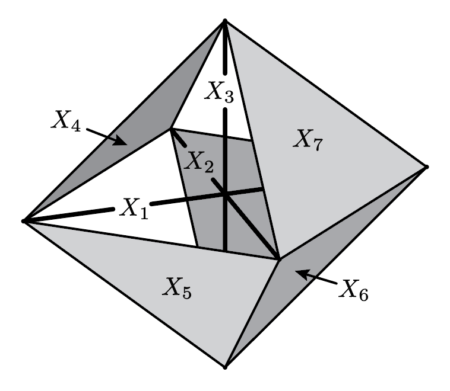 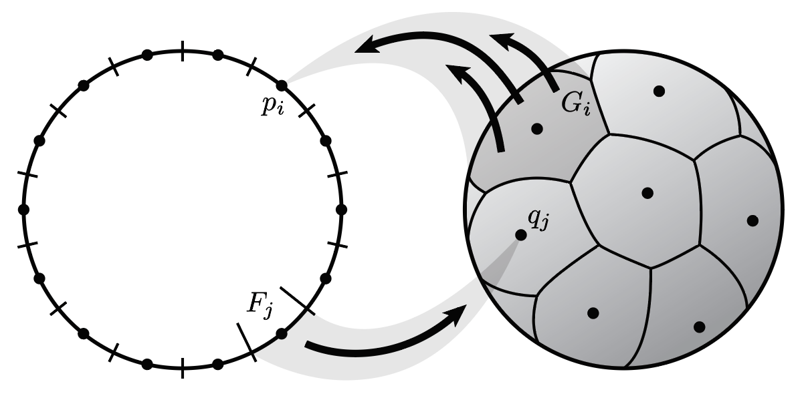
 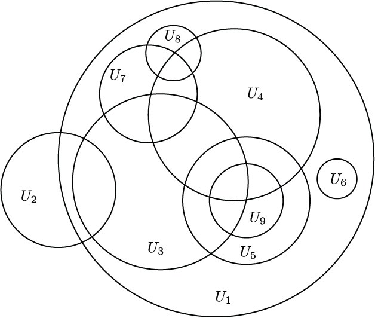
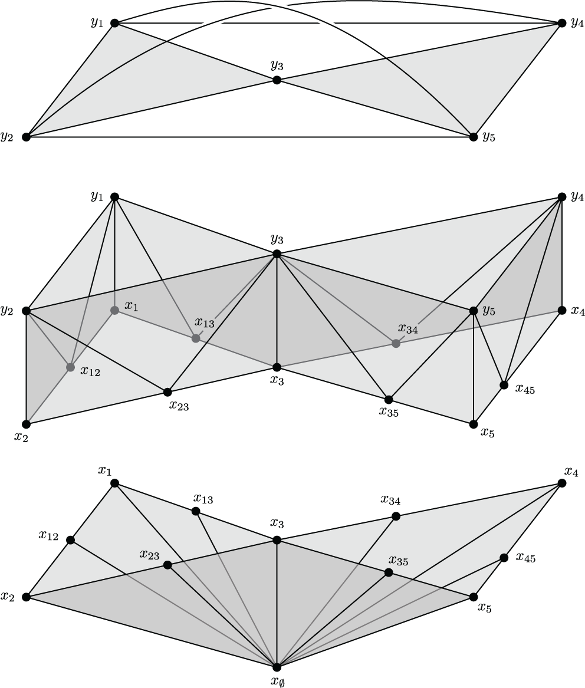
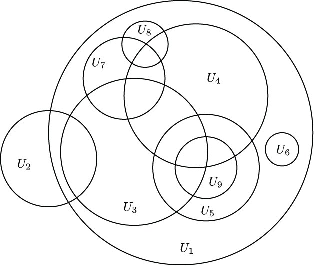
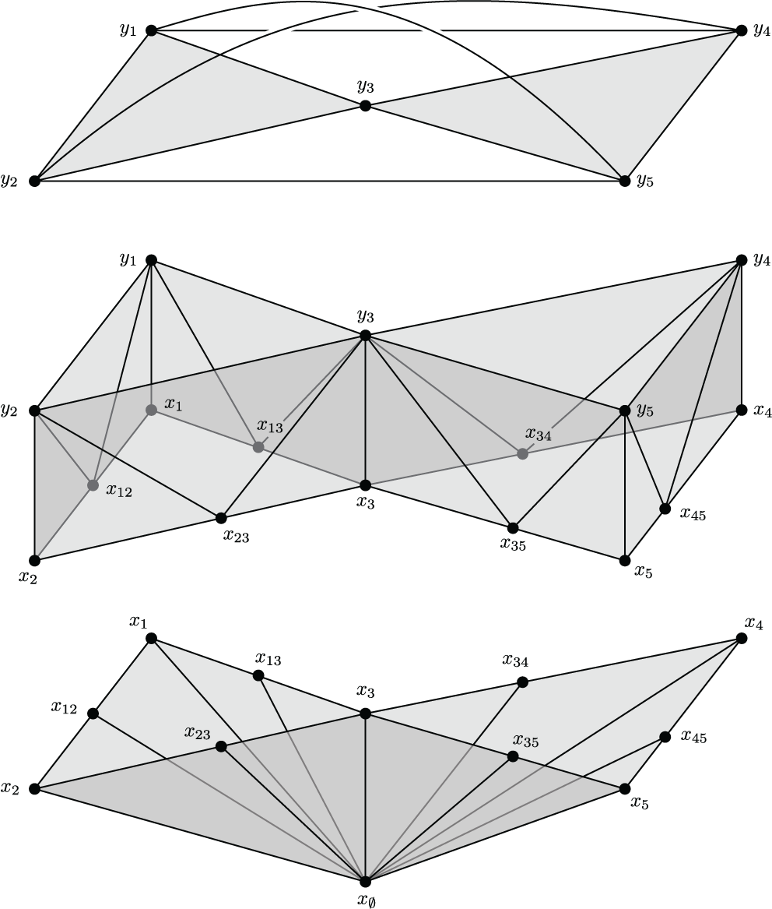
 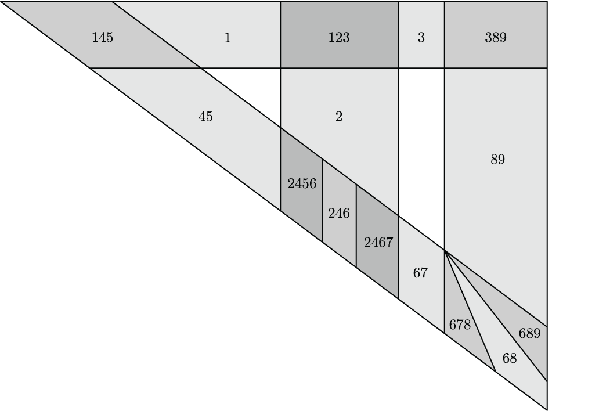
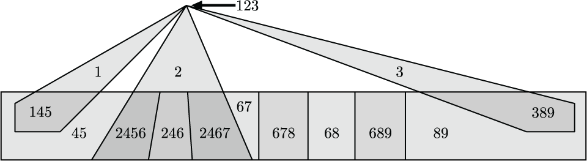
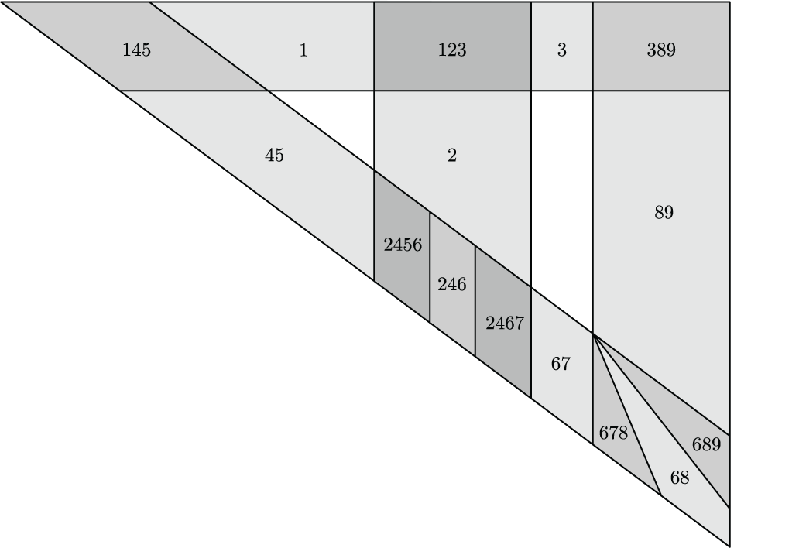
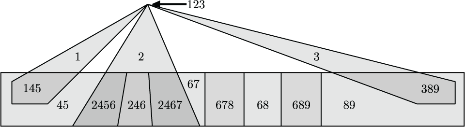

 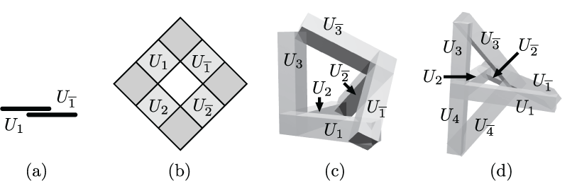
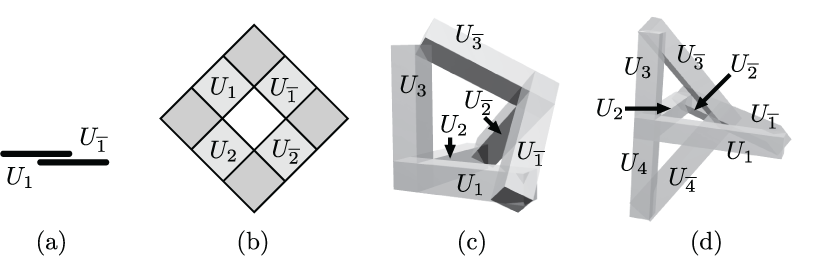

 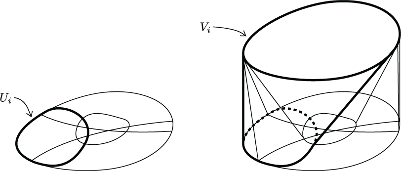
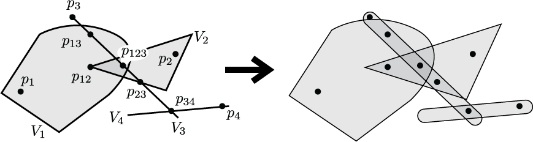
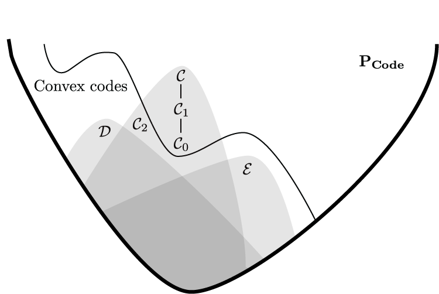
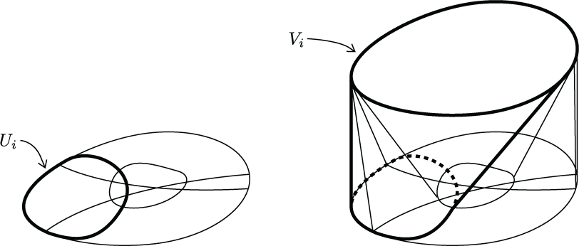
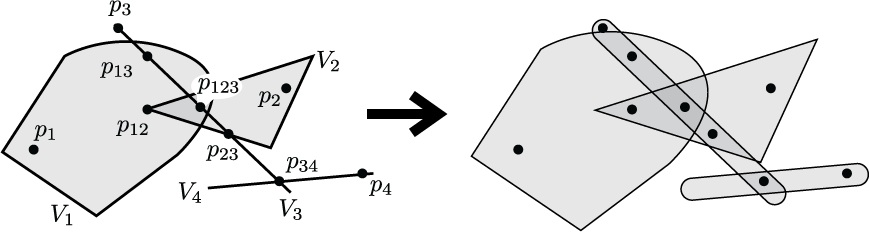
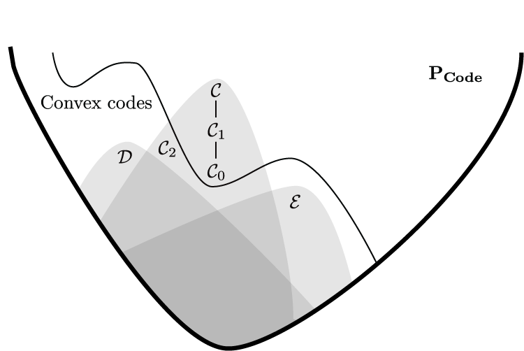
OTHER ACTIVITIES (return to top)
During my graduate studies I was an active organizer and Joint Council member with UAW4121, the union of academic workers at the University of Washington. I am proud to have taken action alongside fellow grad students and workers to win fully-subsidized transit passes, strong protections from harassment, trans-inclusive healthcare measures, improved mental health care, and other crucial gains. I was also active in grassroots political organizing, for example volunteering with the Tax Amazon movement, which won hundreds of millions of dollars in funding for affordable housing in Seattle. In Pittsburgh I have been active in organizing community support for labor campaigns, for example Amazon workers who are fighting for a union at Amazon's KCVG air hub. More recreationally, I enjoy hiking, rock climbing, cooking, and parkour.